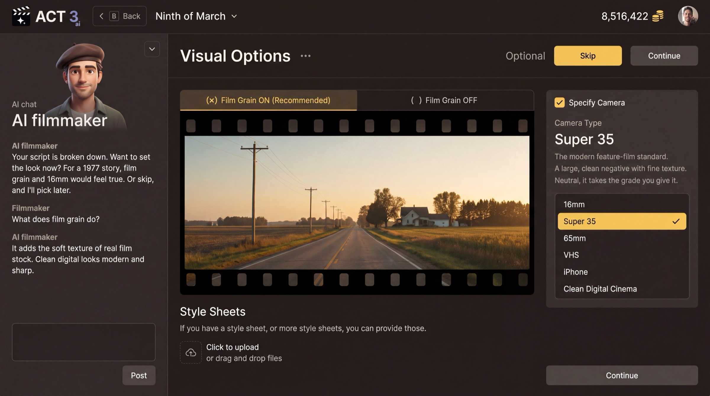

Step 5 of 8
Pick the look
Set the film's look in two short pages. On Visual Options choose film grain and a camera, then press Continue, or Skip. On Render Style pick one style, such as Real Life, and press CONTINUE.

What these pages are
Two pages set the look of the whole film. Both are about the picture, not the story, and both can be changed later.
Visual Options (optional)
- Film Grain: ON (recommended) adds the soft texture of real film stock; OFF looks clean, modern and digital.
- Camera Type: the format the film looks shot on: 16mm, Super 35, 65mm, VHS, iPhone, Clean Digital Cinema.
- Style Sheets: upload look references you already have.
Render Style
Every shot the AI generates follows this style: Real Life, Cartoon, 3D Animation, Anime, Film Noir, Storyboard and more. CREATE NEW RENDER STYLE › builds your own; it is marked advanced.
Your decisions
Visual Options: press Skip to take the recommended look (grain on, the recommended camera), or set grain and camera to match your story's era. A 1977 story feels true on 16mm with grain; a present-day thriller on Super 35.
Render Style: pick Real Life for live-action drama; pick an animated style when the story is made for it.
Why you go next to Plot / Treatment
With the look set, ACT 3 AI shows you the treatment it wrote from your script, so you can check the story it understood.